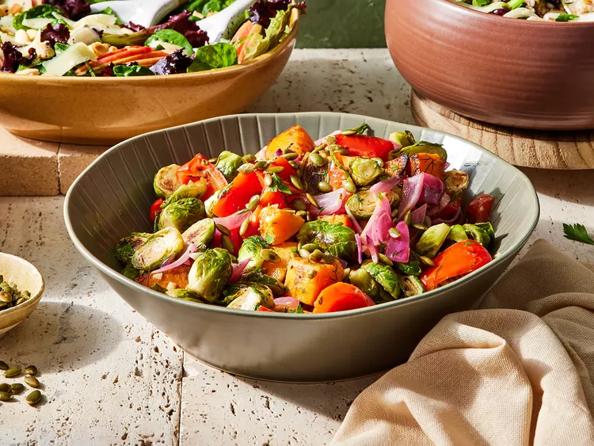

Roasted Fall Vegetable Salad

Description
Dig into this roasted fall vegetable salad that pairs in-season squash and sprouts with toasted pepitas and fresh herbs.
| Prep Time: |
Cook Time: |
Cool Time: |
Total Time: |
Servings: |
| 15 mins |
20 mins |
40 mins |
1 hr 15 mins |
4 |
Ingredients
- 2 cups halved Brussels sprouts (10 ounces)
- 2 cups coarsely chopped butternut squash
- 1 red bell pepper, cut into 3/4-inch pieces
- 1 red onion, cut into 3/4-inch pieces
- 4 tablespoons olive oil, divided
- 1/2 teaspoon salt
- 1/2 teaspoon freshly ground black pepper
- 1 tablespoon red wine vinegar
- 1 small clove garlic, minced
- 2 tablespoons pepitas (pumpkin seeds), toasted
Steps
- Step 1
Preheat the oven to 425 degrees F (220 degrees C). Line a large baking sheet with foil. Spread Brussels sprouts, squash, bell pepper, and red onion on prepared baking sheet. Drizzle with 2 tablespoons oil. Sprinkle with salt and pepper; toss to coat.
- Step 2
Roast vegetables in the preheated oven, stirring halfway through, until browned and tender, about 20 minutes. Let cool 10 minutes.
- Step 3
Meanwhile, for vinaigrette, whisk together vinegar, herbs, garlic, and mustard in a large bowl. Slowly pour in remaining 2 tablespoons oil, whisking until oil is incorporated and dressing is smooth and creamy.
- Step 4
Add vegetables to bowl with vinaigrette; toss. Let cool to room temperature (or chill, covered, up to 1 week). Sprinkle salad with pepitas just before serving.
Nice and Toasty
To toast nuts and seeds, cook in a dry skillet over medium heat, stirring frequently, until lightly browned and fragrant, 4 to 7 minutes. Keep an eye on them. They can burn quickly.
Nutrition Facts (per serving)
| Calories: |
Carbs: |
Protein: |
Fat: |
| 230 |
22g |
5g |
16g |
Back To Top
Back To Main Menu